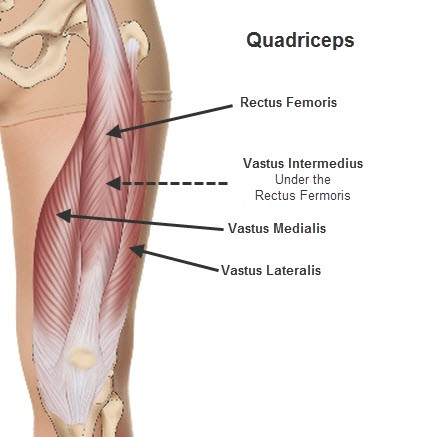

대퇴사두근이란..?
대퇴사두근이란 허벅지의 앞쪽에 위치한 근육으로 대퇴부에서도 가장 핵심 부위로 매우 큰 근육이다.

사진의 모습처럼 자리를 하고 있는데 장두가 4개가 있다고하여 사두근이라고 표현한다.
위치는 정확히는 엉덩뼈의 아래에서 무릎인대를 지나 정강이뼈까지 이어지는 근육이다.
그리고 대퇴사두근은 아래와 같은 기능을 수행하는 큰 근육이다.
▶고관절의 굽힘
▶무릎을 펴는 작용
대퇴사두근은 매우 큰 근육이면서 위와 같은 기능을 하는 근육으로 발달 시킬경우 튼튼한 다리가 금방 눈에 뛸 수 있는 근육이다.
이러한 대퇴사두근을 운동하기 위해서는 어떤 운동이 있을까? 그에 대한 답변을 위해 유튜브
설기관에서 정보를 가져왔다
이렇게 대퇴사두근의 기능, 생김새, 그리고 위치에 대해서 간단하게 살펴보고 그에 대한 운동법에 대해 알아 보았으니 앞으로 스스로 열심히 운동하여 건강한 다리를 얻길 바란다.